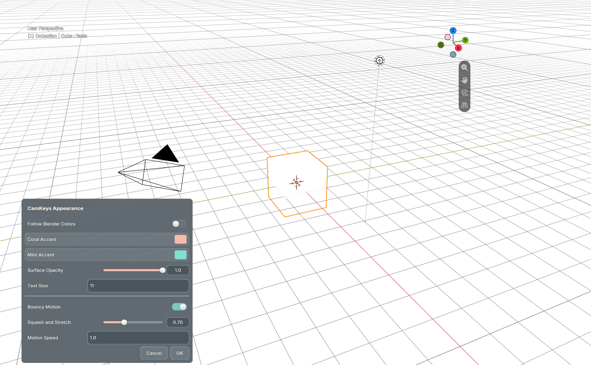
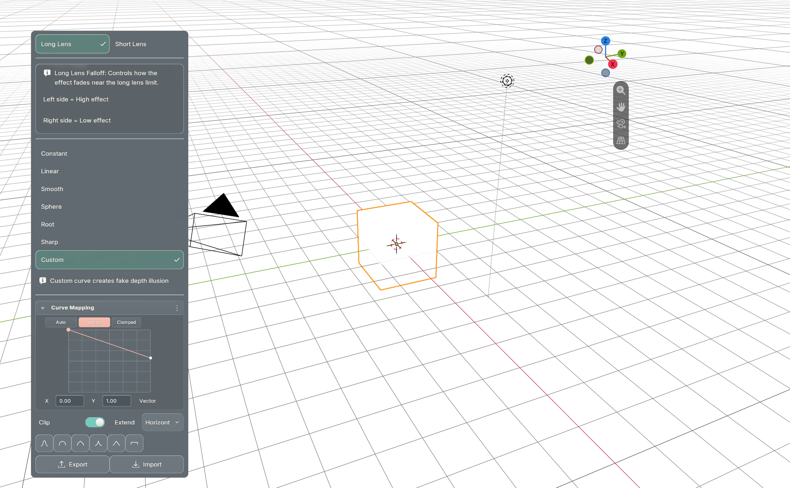

November 1, 2026 · 355 unit tests; Blender 5.1.2 / 5.2.2 runtime checks passed.
Dialogs stay clear of the overlapping sidebar. Literal values in visible list rows update without replacing their controls. The real Apparent FL falloff button now opens the custom curve editor.
Verified values: 0.251 → 0.750 → 0.221, with the same retained row controls. Five visible rows refreshed in approximately 0.3 ms in the isolated fixture; this is not a full-scene benchmark.
These are unedited Blender 5.2.2 framebuffer captures from the disposable fixture. Its scene/background differ from Uraraka. Custom glass and input checks pass; no focus activation was recorded.


The installed preview is updated for next launch. The live session closed before reload; its scene was not saved. Animated help images were absent from the refreshed default branch and were skipped as requested.